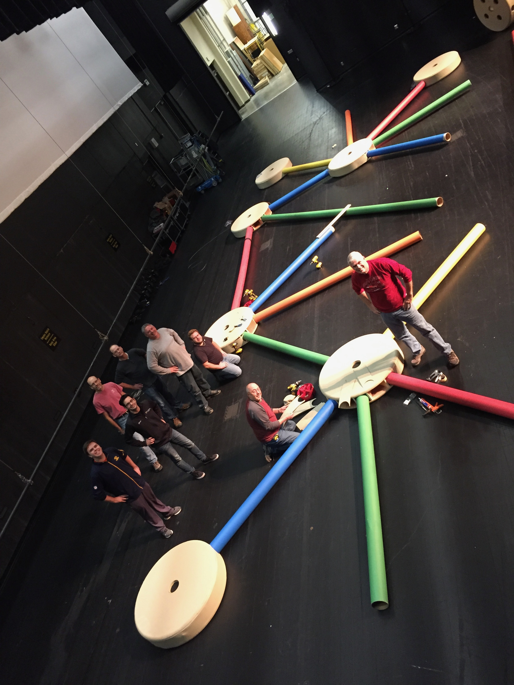

SupportWoodbury Community Theatre is part of Merrill Community Arts Center, an umbrella non-profit arts organization that houses WCT, SOS Players, Aspire Music Academy, East Metro Symphony Orchestra, Artists of Woodbury, and other great groups. As a non-profit, Woodbury Community Theatre makes half of its money through ticket sales; if you've bought a ticket to one of our shows before, thank you! The other half of our money comes from donations. Woodbury Community Theatre is part of Merrill Community Arts Center, an umbrella non-profit arts organization that houses WCT, SOS Players, Aspire Music Academy, East Metro Symphony Orchestra, Artists of Woodbury, and other great groups. As a non-profit, Woodbury Community Theatre makes half of its money through ticket sales; if you've bought a ticket to one of our shows before, thank you! The other half of our money comes from donations. There are a few different ways you can donate to Woodbury Community Theatre. Tax-deductible donations can be made by clicking the Give Now button below. Additional ways to support WCT can be found at GiveMN. Additionally, if you are a local business, consider becoming a Season Sponsor. You can choose to be a Presenting Sponsor or a Program Ad Sponsor. As a Presenting Sponsor, you will help to support one major show on our Loft Stage or Black Box Theater. These sponsorships receive the most visibility, both connected to the show’s pre-publicity and on-site visibility, as well as on an annual basis on our website and in other donor recognition communications. Being a Program Ad Sponsor is a very affordable way to support community arts while also receiving visibility among our local audience members, who appreciate businesses that invest in quality arts programming in our neighborhoods! Place an ad in our well-read show programs! For more information, please contact info@wct.org. |